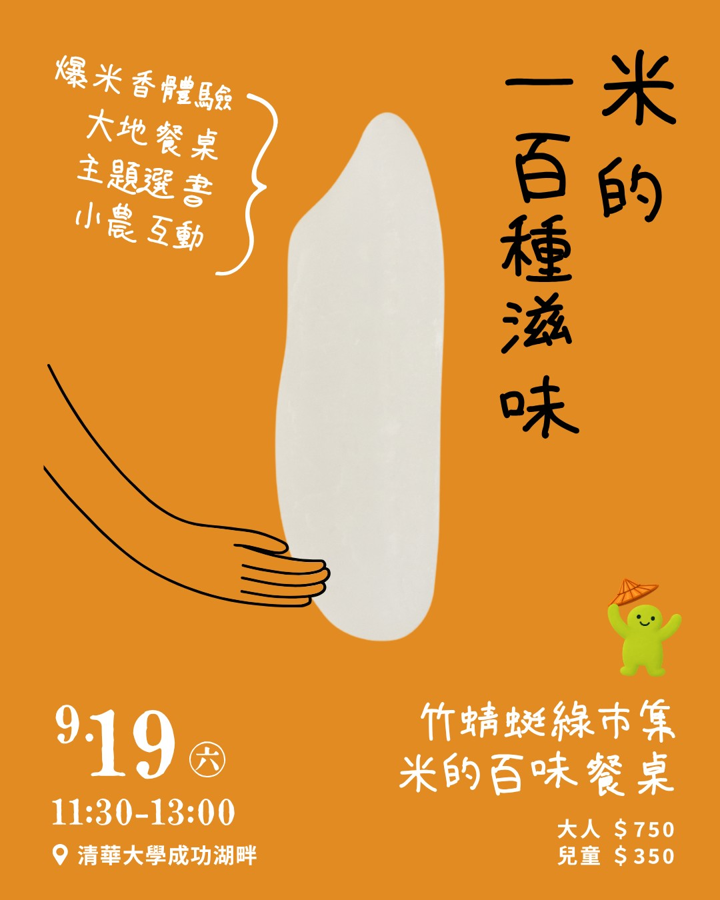

🌾「如果大家都不煮飯了，還有種米的需要嗎？」
近幾年來，市集農友們都有一個共同的感受：米越來越難賣。疫情後，飲食與消費習慣的改變，實實在在地對稻作農業產生劇烈的影響；這場餐桌，我們想試著呈現「米」更多元的面貌——除了煮成飯以外，米是如何豐富台灣人的飲食生活？
從「磅米𥺆 pongˋ miˊ
cang」（爆米香）開場，我們聚集了10組農友兼主廚，各自用「米」設計獨家餐點，有米麵包、米蛋糕、米苔目、米的發酵料理、炒米茶，還有（我們自己最期待的）米冰淇淋⋯⋯今天暫時不吃飯，來看看米還可以怎麼玩！！🌱
🌿活動內容
【時間】2026/9/19 (六) 11:30～13:30
【地點】新竹 清華大學 成功湖畔
【用餐形式】自助餐（請自備碗、餐盤、筷子、杯子等個人餐具）
【費用】750元／成人或12歲以上孩童、350元／3~12歲孩童（3歲以下幼童免費，不計人數）
【報名時間】即日起～9/16(三) 22:00，需事先報名＊
【報名名額】20人
【報名網址】https://forms.gle/d5R1seW5eDxeE3my7
🍽️餐點內容
・德式糙米酸種麵包（饕四季生態農園）
・手工米苔目（新竹自然農俱樂部）
・馬祖紅糟蛋（土鍋飯糰）
・甘酒照燒豆腐（土鍋飯糰）
・翼豆冷盤（饕四季生態農園）
・鹽麴蔬菜溫沙拉（DGI Rose Kitchen）
・西西里麴燉菜（蓋兒手釀）
・柿蒂蒜頭香菇雞湯（柿藥園）
・米冰淇淋、洛神冰淇淋（小鎮冰淇淋）
・黑米香蕉磅蛋糕－核桃或巧克力（慢野生酵母麵包）
・芭樂康普茶（DGI Rose Kitchen）
・炒米茶（新竹自然農俱樂部）
・水柿、芭樂或百香果（柿藥園、卓沐有機農場）
＊餐點內容會依實際食材取得狀況略作調整，以當日提供為準。